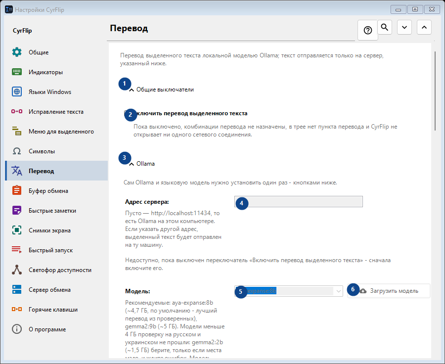
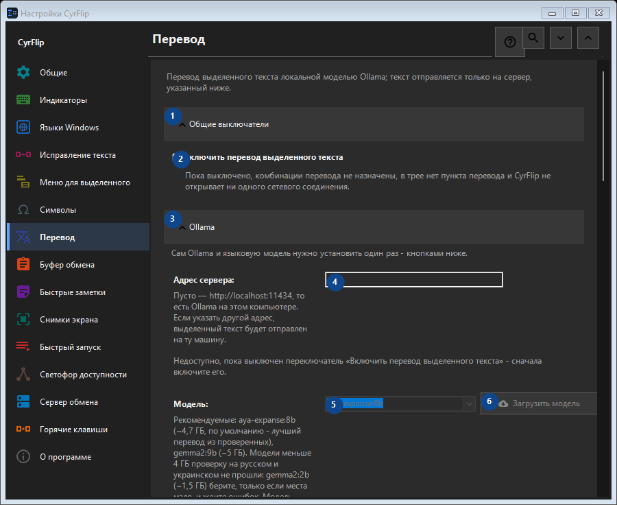

Перевод
Для чего это окно
Перевод выделенного текста локальной моделью Ollama; текст отправляется только на сервер, указанный ниже.


Порядок действий
Настройки применяются сразу. Обязательного порядка нет; используйте группы ниже.
Элементы
1. Общие выключатели
Используйте команду, когда нужно указанное действие. Прочитайте запрос подтверждения перед согласием.
Ваши сочетания клавиш2. Включить перевод выделенного текста
Пока выключено, комбинации перевода не назначены, в трее нет пункта перевода и CyrFlip не открывает ни одного сетевого соединения.
Ваши сочетания клавиш3. Ollama
Используйте команду, когда нужно указанное действие. Прочитайте запрос подтверждения перед согласием.
Ваши сочетания клавиш4. Адрес сервера
Недоступно, пока выключен переключатель «Включить перевод выделенного текста» - сначала включите его. Элемент сейчас недоступен. Сначала включите функцию или выберите запись.
Ваши сочетания клавиш5. Модель
Недоступно, пока выключен переключатель «Включить перевод выделенного текста» - сначала включите его. Элемент сейчас недоступен. Сначала включите функцию или выберите запись.
Ваши сочетания клавиш6. Загрузить модель - Модель
Недоступно, пока выключен переключатель «Включить перевод выделенного текста» - сначала включите его. Элемент сейчас недоступен. Сначала включите функцию или выберите запись.
Ваши сочетания клавиш7. Установить Ollama
Недоступно, пока выключен переключатель «Включить перевод выделенного текста» - сначала включите его. Элемент сейчас недоступен. Сначала включите функцию или выберите запись.
Ваши сочетания клавиш8. Запустить Ollama
Недоступно, пока выключен переключатель «Включить перевод выделенного текста» - сначала включите его. Элемент сейчас недоступен. Сначала включите функцию или выберите запись.
Ваши сочетания клавиш9. Проверить связь
Недоступно, пока выключен переключатель «Включить перевод выделенного текста» - сначала включите его. Элемент сейчас недоступен. Сначала включите функцию или выберите запись.
Ваши сочетания клавиш10. Отмена
Используйте команду, когда нужно указанное действие. Прочитайте запрос подтверждения перед согласием. Элемент сейчас недоступен. Сначала включите функцию или выберите запись.
Ваши сочетания клавиш11. Запускать Ollama автоматически при переводе
Недоступно, пока выключен переключатель «Включить перевод выделенного текста» - сначала включите его. Элемент сейчас недоступен. Сначала включите функцию или выберите запись.
Ваши сочетания клавиш12. Держать модель в памяти (мин)
Недоступно, пока выключен переключатель «Включить перевод выделенного текста» - сначала включите его. Элемент сейчас недоступен. Сначала включите функцию или выберите запись.
Ваши сочетания клавиш13. Сам Ollama и языковую модель нужно установить один раз - кнопками ниже.
Выберите или введите значение для соседней подписи. Проверьте его перед продолжением. Элемент сейчас недоступен. Сначала включите функцию или выберите запись.
Ваши сочетания клавиш14. Ждать загрузки модели не дольше (с)
Недоступно, пока выключен переключатель «Включить перевод выделенного текста» - сначала включите его. Элемент сейчас недоступен. Сначала включите функцию или выберите запись.
Ваши сочетания клавиш15. Сам Ollama и языковую модель нужно установить один раз - кнопками ниже.
Выберите или введите значение для соседней подписи. Проверьте его перед продолжением. Элемент сейчас недоступен. Сначала включите функцию или выберите запись.
Ваши сочетания клавиш16. Направления перевода
Используйте команду, когда нужно указанное действие. Прочитайте запрос подтверждения перед согласием.
Ваши сочетания клавиш17. Добавить направление...
Недоступно, пока выключен переключатель «Включить перевод выделенного текста» - сначала включите его. Элемент сейчас недоступен. Сначала включите функцию или выберите запись.
Ваши сочетания клавиш18. Результат
Используйте команду, когда нужно указанное действие. Прочитайте запрос подтверждения перед согласием.
Ваши сочетания клавиш19. Класть перевод в буфер обмена
Недоступно, пока выключен переключатель «Включить перевод выделенного текста» - сначала включите его. Элемент сейчас недоступен. Сначала включите функцию или выберите запись.
Ваши сочетания клавиш20. Сразу вставлять перевод вместо выделения
Недоступно, пока выключен переключатель «Включить перевод выделенного текста» - сначала включите его. Элемент сейчас недоступен. Сначала включите функцию или выберите запись.
Ваши сочетания клавиш21. Показывать исходный текст рядом с переводом
Недоступно, пока выключен переключатель «Включить перевод выделенного текста» - сначала включите его. Элемент сейчас недоступен. Сначала включите функцию или выберите запись.
Ваши сочетания клавиш22. Закрывать окно через (с)
Недоступно, пока выключен переключатель «Включить перевод выделенного текста» - сначала включите его. Элемент сейчас недоступен. Сначала включите функцию или выберите запись.
Ваши сочетания клавиш23. Недоступно, пока выключен переключатель «Включить перевод выделенного текста» - сначала включите его.
Выберите или введите значение для соседней подписи. Проверьте его перед продолжением. Элемент сейчас недоступен. Сначала включите функцию или выберите запись.
Ваши сочетания клавиш